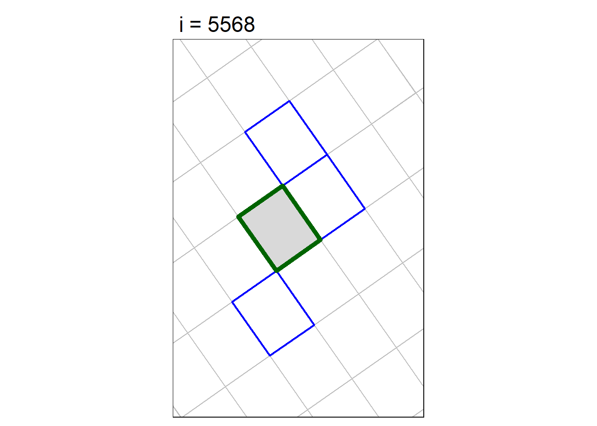
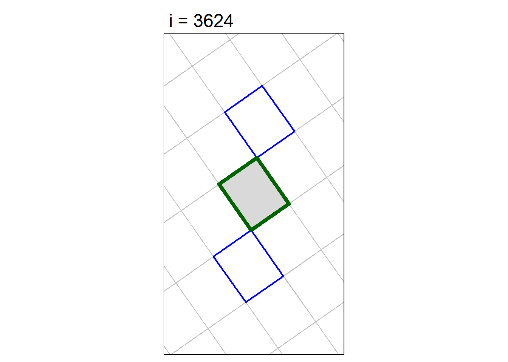
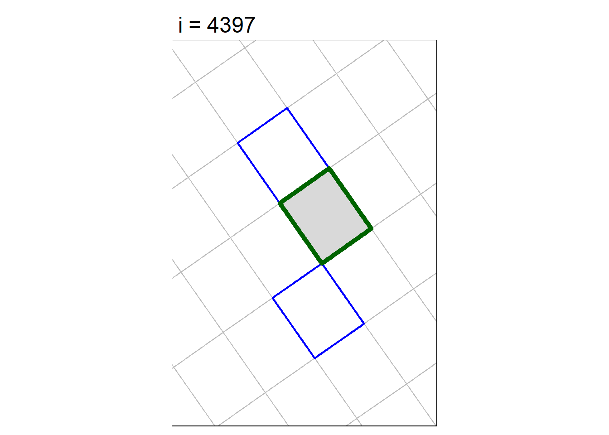
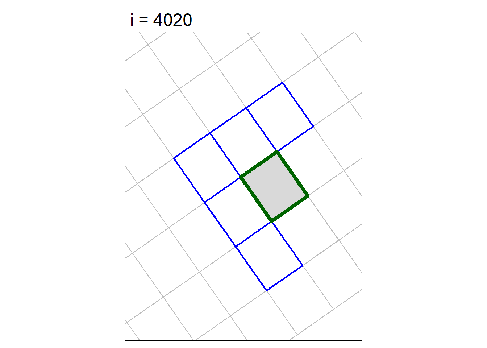
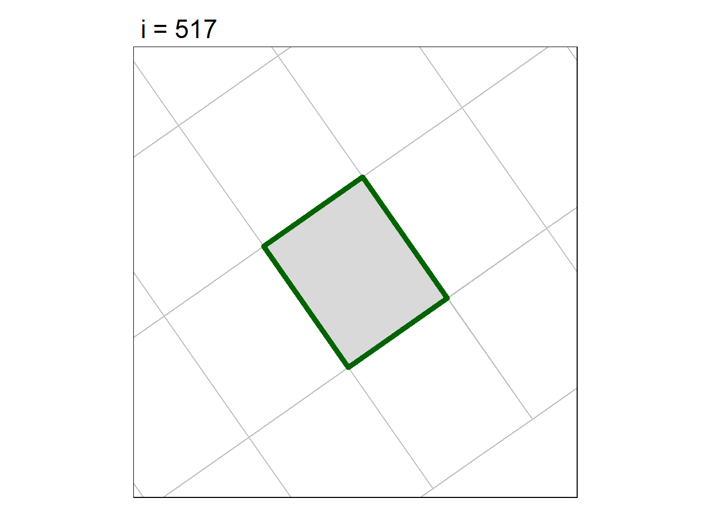
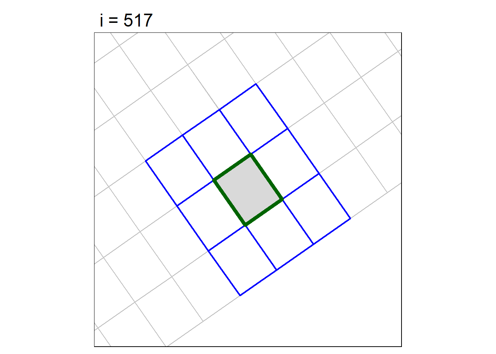
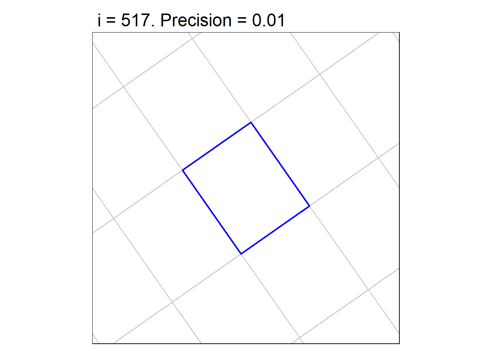
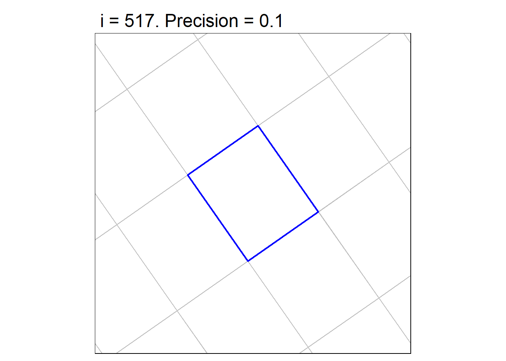
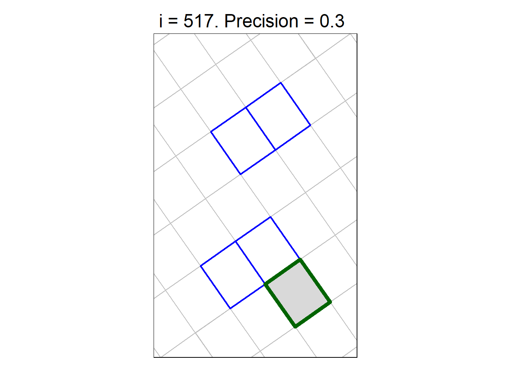
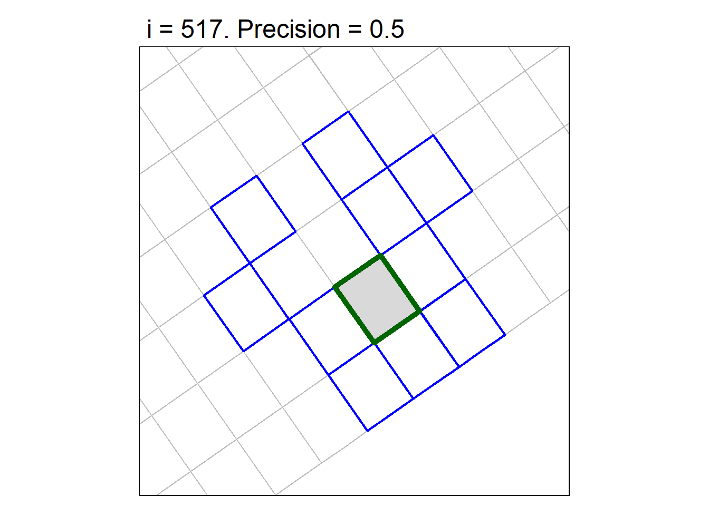

Vineyard Polygons Exploration
In this notebook we will try to reproduce and investigate an ‘error’ finding neighboring polygons within a grid of polygons representing individual vines.
Import the polygons
Load packages:
Import the Shapefile:
grbv_fn <- "GRBV-Export.shp"
file.exists(grbv_fn)[1] TRUEGIS_symptoms_sf <- st_read(grbv_fn)Reading layer `GRBV-Export' from data source
`C:\Users\Andy\Documents\R\users\McCabe\GRBV-Export.shp' using driver `ESRI Shapefile'
Simple feature collection with 75460 features and 11 fields
Geometry type: MULTIPOLYGON
Dimension: XY
Bounding box: xmin: 543787.5 ymin: 4241264 xmax: 575816.2 ymax: 4264013
Projected CRS: NAD83 / UTM zone 10Ndim(GIS_symptoms_sf)[1] 75460 12print(GIS_symptoms_sf)Simple feature collection with 75460 features and 11 fields
Geometry type: MULTIPOLYGON
Dimension: XY
Bounding box: xmin: 543787.5 ymin: 4241264 xmax: 575816.2 ymax: 4264013
Projected CRS: NAD83 / UTM zone 10N
First 10 features:
row vine Vineyard CODE_2023 CODE_2022 CODE_2021_ CODE_2021
1 111 107 Yountville M / / /
2 113 107 Yountville M / / /
3 112 107 Yountville R R R R
4 110 106 Yountville M / R R
5 110 105 Yountville R R / /
6 112 106 Yountville R R / /
7 110 107 Yountville M / <NA> <Null>
8 111 105 Yountville M / / /
9 110 104 Yountville M / / /
10 135 107 Yountville M / <NA> <Null>
GlobalID Odd_Even_R Shape_Leng Shape_Area
1 {0B582AEF-ED46-4D45-A4C9-D4911E2BA512} 1 6.222244 2.700988
2 {6D9785BA-940B-4D5B-9FD6-07AE03258A4F} 1 6.221998 2.700736
3 {18E27993-7461-48B6-B502-A4DE6EB21A11} 2 6.222384 2.701169
4 {AC9D1E9A-8CAD-4547-B5DD-B8F80DE93626} 2 6.705419 2.786950
5 {91701137-4B09-4413-ADBB-34F83AACECDF} 2 6.705701 2.787159
6 {8B982074-D753-4743-A670-DAA0BF6F7326} 2 6.705701 2.787168
7 {104AA80A-1E38-457B-9B8C-B21A3A1E36FA} 2 6.222009 2.700761
8 {C6962961-9F95-43B2-A982-752AC08B53A4} 1 6.705689 2.787171
9 {AEF0DFFA-20CB-4577-A8CE-1ECEF38343B0} 2 6.705419 2.786950
10 {55CF3F96-0BCE-4925-BD3D-F2EF88D5B232} 1 6.222214 2.700931
geometry
1 MULTIPOLYGON (((553435.5 42...
2 MULTIPOLYGON (((553432.7 42...
3 MULTIPOLYGON (((553434.1 42...
4 MULTIPOLYGON (((553437.9 42...
5 MULTIPOLYGON (((553438.9 42...
6 MULTIPOLYGON (((553435.1 42...
7 MULTIPOLYGON (((553436.9 42...
8 MULTIPOLYGON (((553437.5 42...
9 MULTIPOLYGON (((553439.8 42...
10 MULTIPOLYGON (((553401.9 42...View the attribute table:
head(GIS_symptoms_sf)Run a couple of checks:
sf::st_is_empty(GIS_symptoms_sf) |> table()
FALSE
75460 st_is_valid(GIS_symptoms_sf) |> table()
TRUE
75460 Pull out just the polygons for Oakville River West
grbv_oakville_utm_sf <- GIS_symptoms_sf |>
filter(Vineyard == 'Oakville River West')
grbv_oakville_utm_sf |> nrow()[1] 6593grbv_oakville_utm_sf |> head()Plot them in leaflet:
m <- leaflet(grbv_oakville_utm_sf |> st_transform(4326)) |>
addPolygons(weight = 1, color = "#222")
mFind Neighors
Next, we want to find the neighbors of every single polygon (this is the heart of the problem). Start with st_intersects():
grbv_oakville_nb_lst <- grbv_oakville_utm_sf |>
st_intersects(sparse = TRUE)
class(grbv_oakville_nb_lst)[1] "sgbp" "list"length(grbv_oakville_nb_lst)[1] 6593NULLgrbv_oakville_nb_lst[[1]][1] 1 1215 5201Spot Check the Neighbors Found
Let’s do a spot-check visual inspection of a few polygons and their identified neighbors:
[1] 5568 3624 4397 3487 4020for (i in random_i) {
## Begin with everything in the vicinity
this_tmap <- tm_shape(shp = grbv_oakville_utm_sf,
bbox = grbv_oakville_utm_sf[grbv_oakville_nb_lst[[i]], ] |>
st_bbox() |>
st_as_sfc() |>
st_buffer(dist = 1)) +
tm_borders(col = "gray") +
## Next highlight the identified neighbors
tm_shape(shp = grbv_oakville_utm_sf[grbv_oakville_nb_lst[[i]], ]) +
tm_borders(col = "blue", lwd = 2) +
## Lastly add the original
tm_shape(grbv_oakville_utm_sf[i,]) +
tm_polygons(border.col = "darkgreen", lwd = 5) +
tm_layout(main.title = paste0("i = ", i))
print(this_tmap)
}



Based on the spot check above, it appears that st_intersection() does not do a very good or very consistent job at identifying neighbors.
Investigate Neighborless Polygons
Look for any polygons that have no neighbors 😨.
num_nb
1 2 3 4 5 6 7 8 9
19 444 4442 875 443 323 39 2 6 👉 There are 19 polygons that only have 1 ‘neighbor’ (i.e., itself).
Next we plot one of the neighborless polygons to see if it actually neighborless, or a mistake
no_nb_idx <- which(num_nb == 1)
no_nb_idx [1] 517 551 813 823 1096 1162 1475 1544 2267 2352 3664 3729 3892 4227 4442
[16] 4868 5460 6113 6457Let’s plot one of those:
i <- 517
## Begin with everything in the vicinity
tm_shape(shp = grbv_oakville_utm_sf,
bbox = grbv_oakville_utm_sf[grbv_oakville_nb_lst[[i]], ] |>
st_bbox() |>
st_as_sfc() |>
st_buffer(dist = 1)) +
tm_borders(col = "gray") +
## Next highlight the identified neighbors
tm_shape(shp = grbv_oakville_utm_sf[grbv_oakville_nb_lst[[i]], ]) +
tm_borders(col = "blue", lwd = 2) +
## Lastly add the original
tm_shape(grbv_oakville_utm_sf[i,]) +
tm_polygons(border.col = "darkgreen", lwd = 5) +
tm_layout(main.title = paste0("i = ", i)) 
Why doesn’t #517 have any neighbors??
Try some alternate spatial predicates
First we repeat st_intersects():
grbv_oakville_utm_sf |>
slice(517) |>
st_intersects(grbv_oakville_utm_sf, sparse = TRUE)Sparse geometry binary predicate list of length 1, where the predicate
was `intersects'
1: 517Let’s try st_touches():
grbv_oakville_utm_sf |>
slice(517) |>
st_touches(grbv_oakville_utm_sf, sparse = TRUE)Sparse geometry binary predicate list of length 1, where the predicate
was `touches'
1: (empty)👉 st_touches() is also not good.
Try st_is_within_distance() with dist = 0.1 (maps units, meter):
idx_within1meter_lst <- grbv_oakville_utm_sf |>
slice(517) |>
st_is_within_distance(grbv_oakville_utm_sf, dist = 0.1, sparse = TRUE)
idx_within1meter_lst[[1]][1] 517 744 755 865 1020 1039 2211 4056 5306Plot the neighbors found with st_is_within_distance().
i = 517
tm_shape(shp = grbv_oakville_utm_sf,
bbox = grbv_oakville_utm_sf[idx_within1meter_lst[[1]], ] |>
st_bbox() |>
st_as_sfc() |>
st_buffer(dist = 1)) +
tm_borders(col = "gray") +
## Next highlight the identified neighbors
tm_shape(shp = grbv_oakville_utm_sf[idx_within1meter_lst[[1]], ]) +
tm_borders(col = "blue", lwd = 2) +
## Lastly add the original
tm_shape(grbv_oakville_utm_sf[i,]) +
tm_polygons(border.col = "darkgreen", lwd = 5) +
tm_layout(main.title = paste0("i = ", i)) 
👍
Investigate Setting the the Precision
Numerous stack overflow posts suggest the challenges with st_intersects(), st_touches(), and other spatial predicates have to do with i) misunderstanding how these functions actually work under the hood (i.e., the definition of ‘touch’), and ii) rounding, snapping, and floating point math of the coordinates. Points made Stack Overflow posts such as this one provide some details:
You need to review the meaning of the “touch” relationship. Polygon objects which have areal intersection overlap do not touch (they intersect).
Successful use of “Touches” requires perfect topology.
the “touching” predicate is tricky, and can fail due to issues with imprecise data capture and floating point math.
I have found
sf::st_is_within_distance()more reliable, when used with a reasonable distance argument (that may need tuning for a given context)
To investigate this, we can try different settings for the precision:
The default should be 0:
st_precision(grbv_oakville_utm_sf)[1] 0idx_touches_lst <- grbv_oakville_utm_sf |>
slice(517) |>
st_touches(sparse = TRUE)
idx_touches_lst[[1]]integer(0)precision_vals <- c(0.001, 0.01, 0.1, 0.25, 0.3, 0.5)
i <- 517
for (prec_dbl in precision_vals) {
st_precision(grbv_oakville_utm_sf) <- prec_dbl
## Regenerate the touch list
idx_touches_lst <- grbv_oakville_utm_sf |> slice(517) |>
st_touches(grbv_oakville_utm_sf, sparse = TRUE)
cat(paste0("Precision = ", prec_dbl, "\n"))
print(idx_touches_lst[[1]] )
print(length(idx_touches_lst[[1]]))
if (length(idx_touches_lst[[1]]) > 0) {
my_tmap <- tm_shape(shp = grbv_oakville_utm_sf,
bbox = grbv_oakville_utm_sf[idx_touches_lst[[1]], ] |>
st_bbox() |>
st_as_sfc() |>
st_buffer(dist = 1)) +
tm_borders(col = "gray") +
## Next highlight the identified neighbors
tm_shape(shp = grbv_oakville_utm_sf[idx_touches_lst[[1]], ]) +
tm_borders(col = "blue", lwd = 2) +
## Lastly add the original
tm_shape(grbv_oakville_utm_sf[i,]) +
tm_polygons(border.col = "darkgreen", lwd = 5) +
tm_layout(main.title = paste0("i = ", i, ". Precision = ", prec_dbl))
print(my_tmap)
}
}Precision = 0.001
integer(0)
[1] 0
Precision = 0.01
[1] 6192
[1] 1
Precision = 0.1
[1] 4988
[1] 1
Precision = 0.25
[1] 2426 6149 6210
[1] 3
Precision = 0.3
[1] 91 744 865 4567
[1] 4
Precision = 0.5
[1] 755 1020 1039 1208 1290 2211 3986 4056 5306 6462
[1] 10
👉 Setting the precision has strange effects. This Stack Overflow post suggests why.
It’s hard to say why these geometries are affected. It could be a legacy of the Shapefile format, the high level of precision of the data (there are geoprocessing tools to reduce that), etc.
Way Forward
st_is_within_distance() with dist = 0.1 seems to capture the immediate neighbors (assuming you want to define the neighbors using the ‘queen’ rule as opposed to the ‘rook’ rule).
This GH Issue explains how you can transform the results from st_is_within_distance() for use in spdep.
Getting st_touches() or st_intersection() to work may be doable with some further investigation into the coordinates.